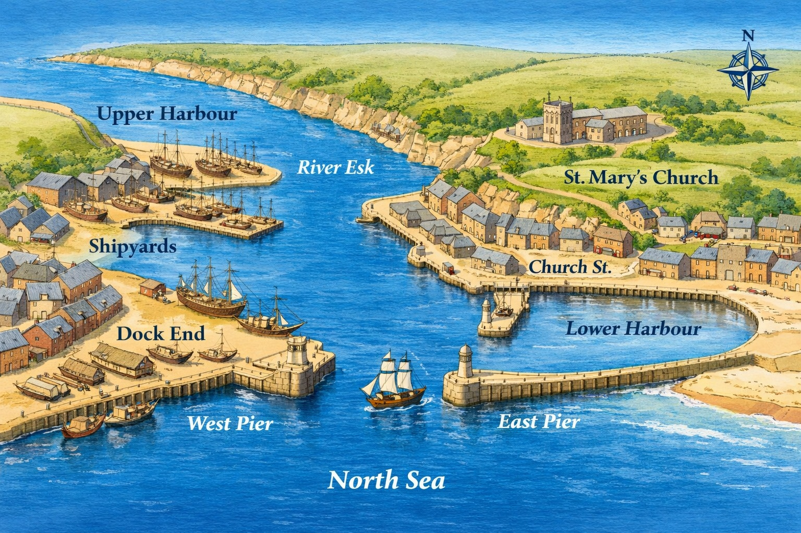

Joseph Holt of Whitby (1686–1754)
Master Mariner, Freeman of York, and joint founder of the Whitby Dock Company.
The Holts of Whitby emerged as a prominent maritime family in the early 18th century, rooted in the port town’s shipbuilding and seafaring traditions. At this time Whitby was transforming into one of the most important shipbuilding centres in eighteenth‑century England. Joseph Holt, born in York in 1686, he was likely baptised at Holy Trinity Micklegate on 15 November 1686, settled in Whitby and married twice—first to Ann Willson (1681–1708), and later to Margaret Skelton (1684–1751), daughter of a local long established Whitby family. Their children included John Holt (1718–1783), Thomas Holt (1722–1782), and Edward Holt (1723–1749), all of whom followed their father into the maritime trades. The family's intermarriage with the Coates, Storm, Linskell, and Campion families created a dense kinship network of master mariners, shipowners, and builders. Baptismal and burial records from St Mary the Virgin, Whitby, confirm their long-standing presence in the town’s civic and religious life.
Joseph Holt (The Father) (b.~1655 – ~1727): He was admitted as a Freeman of York in 1682 (specifically "35 Charles 2nd") by redemption (per red), which suggests he may have served an apprenticeship as a carpenter or mariner, though he is explicitly recorded in the register as a labourer. The Freeman of York status granted the family enfranchisement, the right to vote.
Maritime career
Joseph Holt was admitted as a Freeman of York in 1725–6 as a Master Mariner, and he is recorded as a joint founder of the Whitby Dock Company, a pivotal institution in the town’s maritime infrastructure. Joseph 1725 exercised his right to vote by travelling from Whitby to York in 1741 to vote in the County Member elections. His childhood in York was marked by the loss of siblings, as his elder brother William and a previous Joseph both died in infancy before the births of his younger brothers John and Thomas. The Dock Company was responsible for expanding and maintaining the harbour facilities that enabled Whitby’s shipbuilding and coastal trade to flourish. His sons continued the business legacy: John Holt (1718–1783) became a master mariner and married Martha Storm, while Thomas Holt (1722–1782) and others were involved in shipbuilding and ownership. The family’s vessels operated in the North Sea and coastal routes, and their names appear in shipping registers and local trade directories. The Holt name became synonymous with Whitby’s maritime expansion during the 18th century, contributing to the town’s reputation as a centre of naval provisioning and merchant shipping.
Specific customs records for Joseph's ship, the Olive Branch, reveal the vital role she played in the local economy; in October 1715, she delivered iron, hemp, and tar to Whitby, and in June 1718, her cargo included 10,000 bricks, 1,000 pantiles, and nearly 2,000 lbs of tobacco. The vessel was a robust 187-ton pink-sterned brigantine, measuring 86’ 10” in length and 23’ 6” in width. Tragedy struck the family in July 1732 when Joseph's brother, Thomas, master of the 100-ton Olive Berry, struck a rock called Sparrow-hawk near Shields; the ship sank in minutes and the entire crew perished.
The Whitby Dock Company
During the 1730s, Whitby saw a major step forward in its maritime facilities when the newly formed dock company created three dry docks on the east bank of the Esk near Spital Bridge. The enterprise was driven by four forward thinking master mariners William Barker, James Reynolds, Joseph Holt (baptised 1718), and John Watson. Watson’s interest later passed his son‑in‑law, John Kildill, almost certainly as part of a marriage settlement in 1734. In 1734, Joseph joined with partners William Barker, John Reynolds, and John Watson to establish The Dock Company, which erected a double dry on the East bank of the Esk near Spital Bridge. At the time of his death, Joseph had acquired a considerable estate, including Middle Houses in Baxtergate, a share of the Highgarth property, and five houses situated at the junction of Baxtergate and Scate Lane. The Dock Company premises were not limited to ship repair; record of his widow’s inheritance confirms the site also included a blacksmith’s shop. One of the company’s earliest achievements was the completion of a double dry dock in 1734, financed and overseen entirely by the partners. Whitby already served as a winter harbour for many vessels, and these new docks allowed ships to be repaired more thoroughly and at competitive rates. They also ensured steady winter employment for ship carpenters and other trades. The dock company’s site soon developed into a substantial industrial complex. Alongside the dry docks, it included two shipyards, a blacksmith’s shop, and a number of houses and tenements associated with the business. Members of the company occasionally commissioned ships themselves, providing opportunities for mariners who wished to establish shipbuilding ventures without the cost of purchasing their own yards,tex among them the youngest son of Gervase, and William Coulson of Scarborough.
Later life and legacy
Joseph Holt died in 1754 and was buried at St Mary’s. His descendants continued to serve as mariners, shipowners, and shipbuilders throughout the eighteenth century. His legacy lies in the establishment of the Holt family in Whitby, his role in the Dock Company, and his contribution to the maritime expansion of the town. He was the founding figure of the Whitby Holts.
Joseph was an Old Presbyterian and acted as a trustee for the benefaction of Leonard Wilde, a wealthy sailmaker whose legacy supported the minister and the Flowergate chapel. When he signed his will in 1740 before a voyage, his signature was described as "shaky," perhaps reflecting his concern for the "ffrailty of this mortal state". While a 19th-century transcription of his tombstone in the Whitby Parish Churchyard recorded his age as 63, historical baptismal records suggest he was actually 57 years old at the time of his death in 1744.

The historic style map of Whitby is not an acurate representation.
- — The heart of Whitby’s shipyards and the centre of Holt family activity.
- — Deepened and maintained by the Whitby Dock Company.
- — Essential to safe entry; strengthened under Dock Company oversight.
- — The maritime quarter where many Holt associates lived.
- — The Holts’ parish church, overlooking the harbour.
Captain Cook’s Merchant Ships, S Baines, 2015